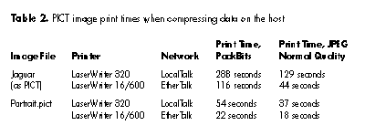

Using JPEG image compression techniques can dramatically improve performance
during printing to PostScript(TM) Level 2 printers; compressed images are
significantly smaller and take much less time to print. You don't need to write
PostScript code or special-case your code for PostScript printing; QuickTime and the
printer driver do most of the work for you. You don't have to wait to get started,
either. If you implement JPEG image data compression techniques in your application,
users printing to PostScript Level 2 printers with the current LaserWriter 8.3
driver will see improvements in printing performance right away.
Many applications compress image data for storage and transmission, but compressing
images for printing is relatively uncommon. With the techniques presented in this
article, you can start printing with image data compression and realize significant
performance gains without a lot of effort. First we'll explore the concepts behind using
image data compression for printing, and then go through three sample applications
that show you how to do it.
The first two samples demonstrate how to print existing compressed image data.
Applications that already deal with JPEG compressed data, such as Web browsers and
JPEG viewing applications, can benefit immediately from these techniques. Developers
whose applications handle other kinds of compressed data (such as fax) can see how
they might benefit in the future as printing software is enhanced to handle other types
of compressed data.
Some applications don't already have compressed data to print. Painting applications,
for example, handle image data that may not be in a standard compressed format. The
third sample application shows you how to compress your data as you do your
print-time imaging.
To give you an idea of the performance gains you might expect with these techniques, I
printed the same images with and without JPEG image data compression and compared
print times and data sizes. The improvements are notable -- compressed color images,
for example, can print in less than half the time. You may find the results so
compelling that you'll want to implement these techniques in your own application.
This issue's CD contains the sample applications as well as some images you can use
with them. It also contains a prerelease version of LaserWriter 8.3.1, which you may
find useful for testing your application as you implement printing with compression.
Realistic images can be quite large, resulting in slow print times. Compression
algorithms such as JPEG, fax, and LZW are used to reduce the size of these images for
storage and transmission. Image data compressed in these formats can be decompressed
on PostScript Level 2 printers.
While many applications can handle compressed image data, at print time they usually
decompress the data and use CopyBits to draw the decompressed images. Only a few
applications use custom PostScript code to take advantage of the image decompression
available in PostScript Level 2 output devices.
QuickTime's Image Compression Manager provides an API for applications to compress
and decompress still image data. By using the Image Compression Manager functions,
applications can draw JPEG compressed image data. If this drawing takes place at print
time, the application is effectively passing compressed image data to the printer
driver; this allows the driver to handle the compressed data appropriately for the
target output device, as described in the next section. The application doesn't need to
know whether that device is a QuickDraw, PostScript Level 1, or PostScript Level 2
device.
If your application handles only QuickDraw pictures, it doesn't need to perform any
special action to take advantage of image data compression. QuickDraw pictures
containing JPEG compressed image data are available from various sources; QuickTime
can compress QuickDraw pictures transparently, and applications such as Adobe(TM)
Photoshop can create QuickDraw pictures containing JPEG compressed image data.
Applications that use DrawPicture to draw such pictures automatically take advantage
of printer drivers that have special handling of compressed image data. All they need to
do is let the QuickDraw low-level drawing routines do their normal thing.
LaserWriter drivers starting with version 8.3 are savvy about JPEG compressed
images that are drawn with QuickTime. When the driver receives data that's
compressed with JPEG compression and the PostScript output is destined for a
PostScript Level 2 device, the driver sends the compressed data directly to the
printer. Since JPEG compressed images can be as much as 1/10 to 1/40 the size of
uncompressed images, the amount of data sent to the printer is much smaller, which
drastically reduces print times.
HOW THE PRINTER DRIVER HANDLES COMPRESSED IMAGE DATA
In general, printer drivers intercept QuickDraw drawing through the QuickDraw
low-level bottleneck routines. When an application draws compressed image data with
the Image Compression Manager functions (or draws a compressed QuickDraw picture
with DrawPicture), QuickTime passes the compressed data to the low-level QuickDraw
drawing routines through the StdPix bottleneck routine. Normally, StdPix
decompresses the data and passes the decompressed data to the bitsProc bottleneck
routine for drawing.
StdPix is described in detail in Inside Macintosh: QuickTime, pages
3-137 to 3-139.*
The LaserWriter 8.3 driver installs custom bottleneck routines as replacements for
the standard bottlenecks, including bitsProc and StdPix. The custom StdPix bottleneck
is key to the special handling of compressed image data, as shown in Figure 1. The
driver installs the custom StdPix bottleneck in the printing graphics port so that it
can intercept calls to StdPix and examine the compressed data. If the data is
compressed with a compression type that the driver recognizes and knows the printer
is capable of receiving, the driver sends the data directly to the printer. Otherwise, it
calls the standard StdPix, which, as described above, sends the decompressed data to
the bitsProc bottleneck. Drivers that don't have a custom StdPix bottleneck (such as
QuickDraw printer drivers and LaserWriter drivers previous to version 8.3) will
always have decompressed data passed to their bitsProc bottleneck.
Figure 1. Special handling of compressed image data in the LaserWriter
8.3 driver
Using a custom StdPix bottleneck lets a printer driver handle different compression
types appropriately. It also allows for the generation of correct output both for
PostScript Level 2 output devices, all of which support JPEG, fax, and LZW
decompression, and for PostScript Level 1 devices, which don't support any
decompression. For drivers like LaserWriter 8.3 that spool (for background printing
or as part of foreground printing), there's another advantage: since the spool file can
contain compressed images instead of uncompressed images, users benefit from
smaller disk space requirements.
The techniques described here for handling compressed image data will work correctly
with any printer driver, not just PostScript drivers with this special compressed
image data handling. Of course, the performance benefits will be seen only with
drivers that do have it. Most QuickDraw printer drivers will not gain a performance
benefit because they ultimately render decompressed data on the host system and send
the rendered results to the printer. In fact, if the data is being compressed on the host
specifically for printing, there will a performance penalty. A few QuickDraw drivers,
such as Adobe's Acrobat(TM) PDFWriter, create data files that could potentially take
advantage of image compression done by your application.
Note that this technique of using a custom StdPix bottleneck applies to printing to a
color graphics port on a Macintosh system that has Color QuickDraw built in (most
do). Black-and-white ports don't have StdPix bottlenecks; later we'll look at what to
do if you're printing compressed data to a black-and-white port.
WHY THE DRIVER DOESN'T DO COMPRESSION FOR YOU
You might be wondering: "If using image data compression for printing is so great, why
doesn't the driver do it for me automatically?" It's a good question and one that
deserves a good answer.
Different kinds of images, such as fax images, photographic images, and synthetic
images, have different characteristics. The best type of compression to apply depends
on the type of image. Printer drivers operate at too low a level to make good decisions
about image data compression. On the other hand, applications typically have a good
idea about the kind of data they handle.
Additionally, some compression algorithms, such as JPEG, can be "lossy" (that is, they
throw away information), and it would be inappropriate for the driver to apply them
without user control. The driver user interface isn't well suited to specifying
compression preferences, particularly since such decisions should be on a document
by document basis or even on a per image basis within a document. The LaserWriter
8.x drivers do use PackBits compression for all image data passed to their low-level
bitsProc bottleneck, but that's the only active compression done by the drivers and it
isn't very effective for many types of image data.
As mentioned earlier, applications that use DrawPicture to draw QuickDraw pictures
containing JPEG data don't need to do anything special to print the images. In this
section we'll look at how applications can print compressed image data that is not in a
QuickDraw picture.
The JPEG Print sample application reads an existing compressed JPEG data file for
display and printing. In this application, the JPEG data must fit completely in memory
before it can be imaged. This is not a requirement for using compressed data, but is the
simplest approach to describe initially. Later we'll talk about the case where the data
doesn't all fit in memory at once.
At application startup, the JPEG Print sample code checks that QuickTime is installed.
The code also tests to make sure there's a compression-decompression codec that can
handle the decompression of JPEG data; the codec is used to decompress the data on the
host if the data can't be sent to the printer in a compressed form. Applications that can
already print compressed data without QuickTime and an appropriate codec should
continue using their existing code to print when QuickTime and the codec aren't
present.
FILLING IN THE IMAGEDESCRIPTION DATA STRUCTURE
The QuickTime image decompression functions require a handle to an ImageDescription
data structure. This structure contains information about an image, such as the
compression type used, the number of bytes in the compressed image, and the image
height, width, and depth. QuickTime needs this data separate from the compressed data
itself.
In the case of JPEG compressed data, much of the information required in the
ImageDescription data structure is contained in the compressed JPEG data stream. The
JPEG Print application reads the JPEG data stream and extracts the width, height,
horizontal resolution, vertical resolution, and depth of the image. It then uses this data
to build up an ImageDescription structure for use with the Image Compression
Manager functions. The specifics of parsing a JPEG data stream for image description
information aren't discussed here; this part of the sample code comes almost directly
from the sample JFIF Translator application in the Macintosh OS Software Developer's
Kit, with little modification.
CHOOSING THE APPROPRIATE DECOMPRESSION ROUTINE
To draw compressed still images with QuickTime, you can use one of three functions:
DecompressImage, FDecompressImage, or the StdPix bottleneck routine. However, the
DecompressImage and FDecompressImage functions always call the standard StdPix
bottleneck; they do not call any custom StdPix bottleneck (including LaserWriter 8's)
in the graphics port. Since we want our compressed image data to pass through the
driver's StdPix bottleneck, we'll just call the StdPix bottleneck directly, as described
in the next section.
For drawing to a black-and-white port, you'll need to use DecompressImage or
FDecompressImage since a black-and-white port doesn't have a StdPix bottleneck. One
of the arguments to DecompressImage and FDecompressImage (as specified in the
QuickTime documentation) is a handle to the pixel map in which the decompressed
image is to be displayed. In a black-and-white graphics port there is no PixMapHandle
available; instead, there is a BitMap data structure. DecompressImage and
FDecompressImage can accept a BitMap instead of a PixMapHandle as the destination to
draw to, and that's what we pass to DecompressImage when drawing to a
black-and-white graphics port.
CALLING THE STDPIX BOTTLENECK DIRECTLY
The StdPix bottleneck is declared as follows:
pascal void StdPix(PixMapPtr src, Rect *srcRect, MatrixRecordPtr matrix, short mode, RgnHandle mask, PixMapPtr matte, Rect *matteRect, short flags);
The first argument is a pointer to a PixMap "containing" the compressed image data.
This isn't a PixMap in the normal QuickDraw sense; instead, it's a PixMap data
structure that has compressed data "attached" to it with the QuickTime call
SetCompressedPixMapInfo. This call associates an ImageDescription data structure and
the corresponding compressed image data with a PixMap data structure. It's important
that the compressed data not move in memory after you've associated it with the
PixMap. If you use a handle to your compressed data, as we do in the sample code, you
should lock the handle before your call to SetCompressedPixMapInfo and keep it locked
until after you're done with the PixMap.
The next two arguments to StdPix specify a source rectangle and a transformation
matrix that describes the mapping between the source rectangle of the image data and
the destination rectangle. By specifying a source rectangle and a matrix rather than a
source and a destination rectangle, the StdPix interface allows for more general
coordinate transformations than just scaling and translation. Currently, however,
QuickTime supports only scaling and translation.
The mode argument specifies which QuickDraw transfer mode to use when drawing the
image. JPEG Print uses the ditherCopy mode. When printing to PostScript printers,
ditherCopy mode is treated by the LaserWriter 8.x driver exactly like srcCopy mode,
and the PostScript interpreter does any halftoning or dithering appropriate for the
PostScript output device. When imaging to QuickDraw output devices, ditherCopy
causes QuickDraw to dither the image, which usually yields better results than using
srcCopy.
StdPix also accepts mask and matte arguments to obtain special effects. The mask
argument has the same effect as clipping to a mask region as part of the imaging call.
The matte arguments allow for effects similar to those of Color QuickDraw's
CopyDeepMask. Current LaserWriter 8.x drivers do not support clipping to bitmap
regions, or the CopyDeepMask-like effects available with the matte arguments.
Consequently, the mask and matte arguments are ignored by LaserWriter 8.x drivers.
The final argument to StdPix is a flags parameter. The relevant flags are callOldBits
and callStdBits; they work together to specify whether a call to StdPix results in a call
to the bitsProc bottleneck with decompressed data. When the callOldBits and
callStdBits flags are both set, StdPix will always call the bitsProc bottleneck with
decompressed data. If callOldBits is set and callStdBits is not, StdPix will call the
bitsProc bottleneck with the decompressed data only if the bitsProc bottleneck is not
StdBits, but a custom bitsProc routine.
The JPEG Print sample code uses a flags value of (callOldBits | callStdBits) to specify
the most conservative handling of compressed image data during printing. Printer
drivers that know how to handle compressed image data, such as LaserWriter 8.3, will
have a custom StdPix bottleneck to intercept the call and adjust the flags
appropriately. Drivers that don't know how to handle compressed image data will
always receive decompressed image data via their bitsProc bottleneck.
Once we're ready to call the StdPix bottleneck, we don't want to just call the function
StdPix; instead, we must be careful to use any custom StdPix bottleneck that has been
installed. To do this, the code must check the current graphics port for custom
QuickDraw bottlenecks, as shown in Listing 1. If there aren't any, the code gets the
standard bottlenecks; otherwise, it gets the pointer to the CQDProcs record stored in
the graphics port. Once it has the appropriate bottlenecks, the code uses the procedure
pointer stored in the newProc1 field of the CQDProcs record; this is the StdPix
bottleneck.
Listing 1. Calling the QuickDraw StdPix bottleneck directly
// Look to see if there are custom QuickDraw bottlenecks in the
// current graphics port.
if ((((CGrafPtr)qd.thePort)->grafProcs) == NULL) {
// Get the standard bottleneck procs.
SetStdCProcs(&myStdProcs);
// The newProc1 field is the StdPix bottleneck.
MyProcPtr = (StdPixProcPtr)myStdProcs.newProc1;
} else {
// Use the grafProcs record in the current port to obtain the
// custom bottleneck procs. The newProc1 field is the StdPix
// bottleneck.
MyProcPtr =
(StdPixProcPtr) ((CGrafPtr)qd.thePort)->grafProcs->newProc1;
}
// Now call the bottleneck.
CallStdPixProc(MyProcPtr, SpecialPixMapP, &srcRect, &theMatrix,
ditherCopy, NULL, NULL, NULL, flags);
The compressed image data you're working with may not fit completely in memory.
QuickTime supports this case through the use of a data-loading function, which you
supply. QuickTime calls this function as needed to obtain data during image
decompression. Data loading eliminates the need to have the full image in memory,
greatly reducing memory usage.
The use of a data-loading function is described in somewhat sketchy terms in Inside
Macintosh: QuickTime, pages 3-148 to 3-150. Basically, your application creates a
buffer that your data-loading function uses for passing data to QuickTime. In
preparation for the StdPix call, you call SetCompressedPixMapInfo with a pointer to
the beginning of the buffer, the buffer length, and your data-loading function. When
you call the StdPix bottleneck, QuickTime calls the data-loading function as necessary
to obtain the compressed image data.
The data-loading function is declared as follows:
pascal OSErr MyDataLoadingProc(Ptr *dataP, long bytesNeeded,
long refcon);
The first argument is a pointer to a pointer into your data buffer (the one you supplied
in the call to SetCompressedPixMapInfo as described earlier). The bytesNeeded
argument tells your function how many bytes need to be available in the data buffer
pointed to by the pointer in *dataP after the function call returns. The refcon
argument lets you pass additional information to your data-loading function.
EXTENDING JPEG PRINT WITH A DATA-LOADING FUNCTION
The sample application JPEG Print with Dataload, an extended version of JPEG Print,
uses the function MyDataLoadingProc, shown in Listing 2. Code not included here fills
up the buffer with the first chunk of compressed data and sets up the data-loading
function so that the refcon passed to it is a pointer to our application-defined DataLoad
structure.
Listing 2. The data-loading function
static pascal OSErr MyDataLoadingProc(Ptr *dataP, long bytesNeeded,
long refcon)
{
OSErr theErr = noErr;
if (dataP != NULL) {
DataLoadPtr theDataLoadPtr = (DataLoadPtr) refcon;
// refcon is a pointer to a structure that contains the locked
// handle to our buffer, a field with the buffer size, and a
// field with the file reference number of the image data file
// we are decompressing.
Ptr theDataBufferP =
StripAddress(*(theDataLoadPtr->theDataBufferH));
long theBufferSize = theDataLoadPtr->theBufferSize;
short theRefNum = theDataLoadPtr->theRefNum;
// Calculate the number of bytes left in our existing data
// buffer.
long bytesAvail = theBufferSize - (*dataP - theDataBufferP);
// Are there enough bytes in our buffer for this call? If so,
// we don't need to read any more data.
if (bytesNeeded > bytesAvail) {
// We don't have enough bytes of data in our buffer. Figure
// out how many bytes we should read to refill the buffer.
long bytesToRead = theBufferSize - bytesAvail;
// If there are bytes available at the end of our buffer,
// move them to the beginning of the buffer.
if (bytesAvail)
BlockMove(*dataP, theDataBufferP, bytesAvail);
// Go ahead and fill up the rest of the buffer, starting
// just after the last valid byte in the buffer.
theErr = FSRead(theRefNum, &bytesToRead, theDataBufferP
+ bytesAvail);
// Ignore end of file errors.
if (theErr == eofErr) theErr = noErr;
// Reset the data pointer used by the caller of the data-
// loading function so that it points to the first byte of
// valid data, which is now at the beginning of our buffer.
*dataP = theDataBufferP;
}
} else {
// The data mark reset case. This implementation doesn't know
// how to reset the stream, so we return an error. We haven't
// seen a data mark reset as part of JPEG decoding. (Note that
// not handling this case slows down PhotoCD significantly.)
theErr = -1;
}
return theErr;
}
The data-loading function's job is to ensure that when it's called with a request for
bytesNeeded bytes of data, at least that many bytes are available in the buffer pointed
to by *dataP after the data-loading function returns. When MyDataLoadingProc is
called with dataP not NULL, the code first computes how many bytes remain in the
buffer from *dataP to the end of the buffer. If that number of bytes is greater than or
equal to bytesNeeded, there are enough bytes available and the function returns.
Otherwise, the data from *dataP to the end of the buffer is copied to the beginning of
the buffer, and the remainder of the buffer is filled up with new data. Once the buffer
is refilled, *dataP is set to point to the beginning of the buffer so that the caller starts
getting its data there.
Your application may not have compressed data to print. The third sample application
on this issue's CD, PrintPICTtoJPEG, compresses 32-bit-deep image data and prints
it. To obtain a source of bits to compress, PrintPICTtoJPEG takes a PICT file and
images it into a 32-bit-deep offscreen bitmap. It then draws from this bitmap into the
current graphics port. During printing, the data in the offscreen bitmap is
(optionally) compressed using JPEG compression, and then printed using the
techniques for printing compressed data as discussed above for the JPEG Print
application.
The PrintPICTtoJPEG application uses PICT data solely as a source of bits to use to
demonstrate compression. By no means are we advocating this technique as the proper
way to print QuickDraw pictures. QuickDraw pictures may contain line art, text,
custom PostScript code, and images of varying depths that will image and print much
better if you just use DrawPicture. A good portion of the PrintPICTtoJPEG application
is devoted to getting a QuickDraw picture and drawing it into the offscreen bitmap as a
source of bits. The interesting part of the application is the compression and imaging
of the bits once we have them, and that's what we'll discuss here.
The PrintPICTtoJPEG application compresses data only as part of printing it. Of
course, it isn't necessarily true that you would compress data only during printing;
it's very likely that you would maintain the data in a compressed form. Only you know
for sure how you want to handle it.
PrintPICTtoJPEG also does image compression on the data only if the printing port is a
color graphics port; otherwise, it just does the usual CopyBits. (If you already have
compressed image data, you can use FDecompressImage as in the JPEG Print
application to draw already compressed images to a black-and-white graphics port. If
you're compressing strictly for printing, there's no obvious benefit to do so for a
black-and-white port.)
USING COMPRESSIMAGE
The simplest way to compress image data is to use the QuickTime functions
CompressImage and FCompressImage. You call GetMaxCompressionSize to determine
the maximum compression size of your image, and then allocate a handle of that size
and pass it to CompressImage or FCompressImage, as shown in Listing 3.
Listing 3. Compressing image data with CompressImage
CodecType theCodecType = 'jpeg';
CodecComponent theCodec = (CodecComponent) anyCodec;
CodecQ spatialQuality = codecNormalQuality;
short depth = 32;
// sPixMap is a handle to the pixel map to be compressed.
// bounds is a pointer to a rectangle specifying the portion of the
// image to compress.
if (theErr == noErr)
theErr = GetMaxCompressionSize(sPixMap, bounds, depth,
spatialQuality, theCodecType, theCodec, &maxCompressionSize);
if (theErr == noErr) {
// This allocation should be no problem.
theDescH = (ImageDescriptionHandle)
NewHandle(sizeof(ImageDescriptionHandle));
// This allocation is probably for a lot of memory.
compressedDataH = NewHandle(maxCompressionSize);
theErr = MemError();
// See if we allocated the ImageDescriptionHandle but not the
// memory to receive the compressed image.
if ((theDescH != NULL) && (theErr != noErr)) {
// See if we can get temporary memory instead. Since we're
// going to use the temporary memory as a real handle, we
// require System 7.0 or later.
compressedDataH = TempNewHandle(maxCompressionSize, &theErr);
// This probably can't happen, but just in case...
if (compressedDataH == NULL && theErr == noErr)
theErr = iMemFullErr;
}
}
if ((theErr == noErr) && (compressedDataH != NULL)
&& (theDescH != NULL)) {
MoveHHi(compressedDataH);
HLock(compressedDataH);
theErr = CompressImage(sPixMap, bounds, spatialQuality,
theCodecType, theDescH, StripAddress(*compressedDataH));
HUnlock(compressedDataH);
}
GetMaxCompressionSize is likely to return a large size for full color images, perhaps
a larger amount of memory than the application can allocate out of its application heap.
To allow for this, PrintPICTtoJPEG first tries to allocate a handle in its application
heap by using NewHandle. If that fails, it attempts to allocate temporary memory using
the TempNewHandle function. In this way, the application can compress images when
temporary memory is available without requiring a large application heap. If there
isn't enough memory available, you can use the FCompressImage function with an
application-supplied data-unloading function to write the data to disk as it's being
compressed by QuickTime.
The sample code directly chooses JPEG image compression with any codec that supports
JPEG compression with a quality value of codecNormalQuality. The other available
constants for compression quality values are codecLosslessQuality, codecMaxQuality,
codecMinQuality, codecLowQuality, and codecHighQuality. These constants give varying
compression ratios and corresponding image fidelity.
PROVIDING A USER INTERFACE FOR COMPRESSION PREFERENCES
Although PrintPICTtoJPEG doesn't do this, your application should provide the user a
way to specify compression parameters when using JPEG compression. This is
especially important when you're applying a lossy compression method such as JPEG,
since there's a tradeoff between compression size and image fidelity. Such a decision is
appropriate on a per document or even a per image basis.
The PrintPICTtoJPEG application knows that the data it's working with is best suited
for JPEG compression. If your application has a good idea of what kind of image data it's
working with, it can make the choice of which compression scheme to apply to the data.
If not, you should probably use the standard image-compression dialog to let the user
choose both the compression scheme and the compression parameters.
As part of developing the sample applications, I did some stopwatch time measurements
to see what kind of performance improvements we'd get with JPEG image data
compression. (The image files I used are included on this issue's CD.) The results,
while carefully obtained, are obviously not comprehensive, but they'll give you an idea
of what you can expect. All measurements were taken using a Power Macintosh
6100/66 as the computing host on relatively unloaded LocalTalk and EtherTalk
networks. Unless the application uses JPEG image compression, the LaserWriter 8.3
driver compresses the data using PackBits compression.
For comparison purposes, I used LaserWriter 8.3, which has the special support for
JPEG images described in this article, and LaserWriter 8.2.2, which does not. In both
cases, the application printing code was identical. LaserWriter 8.3 sends the
compressed JPEG data directly to a PostScript Level 2 printer; with LaserWriter
8.2.2, the data is decompressed on the host Macintosh by QuickTime and passed to the
driver's bitsProc bottleneck. Since the LaserWriter 8.2.2 driver is seeing
uncompressed data, it compresses the data with PackBits compression before sending
it to the printer.
To measure print times for already existing compressed data, I used the JPEG Print
application to take an already compressed 186K JPEG image of a jaguar and print it to
a PostScript Level 2 printer. Table 1 shows the results.
Next I used the PrintPICTtoJPEG sample application to measure and compare printing
times both with and without compression on the host (Table 2). I used the same jaguar
image as before but saved as a PICT file, and a smaller PICT file I already had on hand.
Doing image compression on the host is time intensive: it routinely took 2 to 4 seconds
to compress the large jaguar image. Even so, overall performance is better because the
data transfer times to the printer are so much smaller.

Table 3 compares the data sizes for JPEG and PackBits compression.
Today's LaserWriter 8.3 driver has direct support for handling JPEG compressed
images as described in this article. LaserWriter 8.3 supports JPEG compression only
when printing to Apple's PostScript Level 2 printers. When printing to other
PostScript printers or to PostScript files on disk, the driver uses the JPEG
decompressor on the host to decompress the data, regardless of user settings.
LaserWriter 8.3.1 and future LaserWriter 8.x drivers will take advantage of JPEG
compression when printing to all PostScript Level 2 printers as well as when saving
to disk with Level 2 Only selected in the standard file dialog. Adobe's PostScript
printer driver for the Macintosh, PSPrinter, will soon take advantage of JPEG
compression, as will a future version of the PostScript printing system for
QuickDraw GX.
The prerelease version of LaserWriter 8.3.1 on this issue's CD will enable you to test
your application with JPEG compression when printing to non-Apple printers or to
disk. Remember that JPEG compressed data will be written into the data stream only
when your application prints JPEG compressed data and the printer is a PostScript
Level 2 printer. If you're saving PostScript files to disk, be sure to choose the Level 2
Only setting in the standard file dialog. Choosing the Level 1 Compatible setting causes
the driver to write uncompressed data into the output file. When you print 24-bit
photo-realistic images using JPEG compression, files saved with the Level 1
Compatible setting will be about 10 to 40 times larger than files saved with the Level
2 Only setting.
Since PostScript Level 2 output devices also have fax and LZW decompression filters
available, Apple is considering adding support for these compression formats to a
future LaserWriter 8.x driver so that applications handling these types of data can
take advantage of the techniques described here. If you would take advantage of fax or
LZW support in the LaserWriter driver, let us know at AppleLink DEVFEEDBACK or
devfeedback@applelink.apple.com on the Internet.
JPEG images are now abundant, especially on the Internet where more and more people
encounter them each day. Let's start printing these as compressed images! By
implementing the techniques presented here for printing JPEG compressed image data,
you can give your users immediate and substantial gains in printing performance. Plus
you'll be well on your way to printing other kinds of compressed data when printing
software is enhanced to support it.
DAVID GELPHMAN (gelphman@rbi.com) seems to specialize in backwards-reading
programming languages. From FORTH he moved into PostScript at Adobe Systems and
then to Telescript at General Magic. He does do most other things in a more or less
forward direction, although he has been known to fall off a horse backwards. David,
together with his colleague Richard Blanchard, co-designed Apple's LaserWriter 8
PostScript printer driver while working at Adobe Systems. After a stint at General
Magic, David now works at RBI Software Systems (http://www.rbi.com) as a
contractor to Apple and Adobe on their PostScript printer drivers. He does other
contracting work as well, primarily in the area of PostScript printing.
Thanks to Richard Blanchard, Paul Danbold, Peter Hoddie, Kent Sandvik, and Nick
Thompson for reviewing this article.